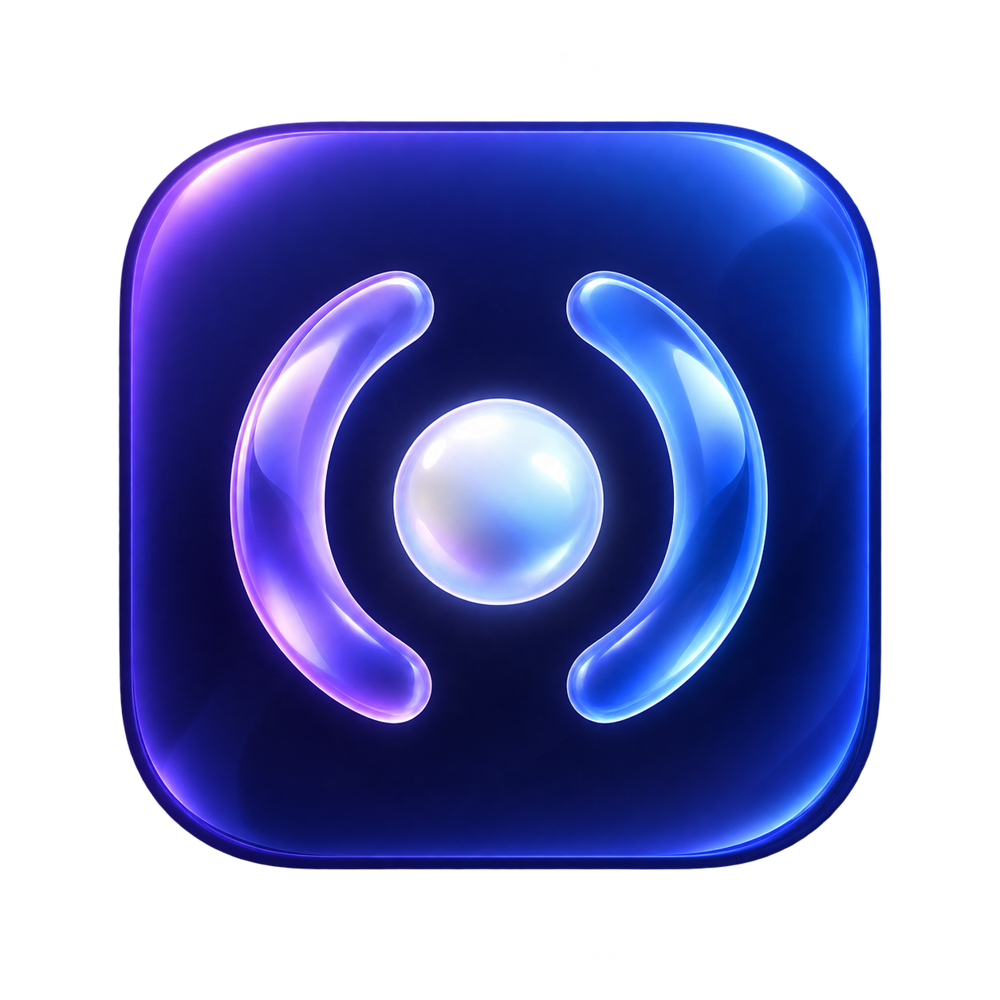

FAROL · SIGNAL LENS
One abstract mark. Three materials for the Dock.
IN CONTEXT
The icon keeps its own identity when the interface accent changes.

ONE MARK, THREE USES
The abstract emblem stays simple. The Dock icon adds material, depth and color. The menu-bar template uses the same open arcs with monochrome ink.
Home remains the first item in the app sidebar. The Dock tile does not appear inside the app.
Try the menu bar ↗